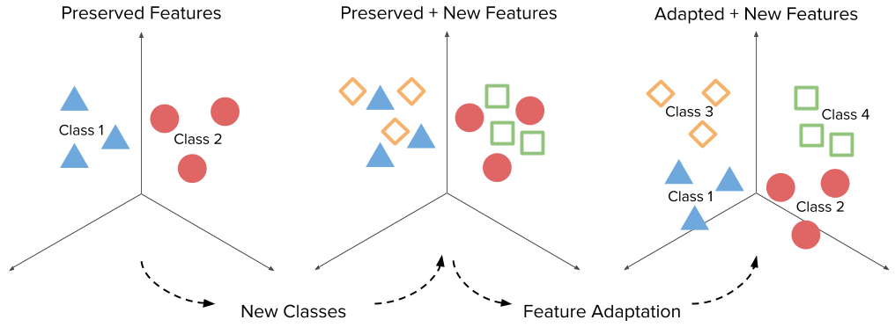
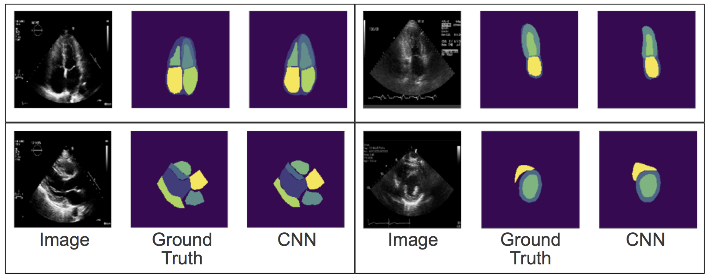

Welcome!
I am a 3rd year PhD candidate under Prof. Svetlana Lazebnik at University of Illinois, Urbana-Champaign studying computer. My research interests lie in representation learning and continual learning. I want to understand how we can better represent, learn, and transfer knowledge. More importantly, I want to research how humans see and think to inform our computer algorithms to do the same. Feel free to take a look at some of the research and projects I've been working on!
In the past, I have done research with Professor Rahul Deo (from UCSF) on diagnosing heart diseases from echocardiograms, advised by Prof. Pulkit Agrawal and Prof. Alexei Efros (at UC Berkeley). I was also advised by Laura Hallock and Prof. Ruzena Bajcsy on medical imaging project for building exoskeletons.
jz41 (at) illinois.edu | CV (as of 08/21/20)
Publications
Memory-Efficient Incremental Learning Through Feature AdaptationAhmet Iscen, Jeffrey Zhang, Svetlana Lazebnik, Cordelia Schmid In ECCV 2020. [paper] |
 |
|---|---|
Automated and Interpretable Patient ECG Profiles for Disease Detection, Tracking, and DiscoveryGeoffrey H. Tison, Jeffrey Zhang, Francesca N. Delling, Rahul C. Deo In Circulation: Cardiovascular Quality and Outcome Vol 12, Issue 9. [paper] |
 |
Fully Automated Echocardiogram Interpretation in Clinical PracticeJeffrey Zhang, Sravani Gajjala, Pulkit Agrawal, Geoffrey H. Tison, Laura A. Hallock, Lauren Beussink-Nelson, Mats H. Lassen, Eugene Fan, Mandar A. Aras, ChaRandle Jordan, Kirsten E. Fleischmann, Michelle Melisko, Atif Qasim, Sanjiv J. Shah, Ruzena Bajcsy, and Rahul C. Deo In Circulation Vol 138, Issue 16. [paper] |
 |